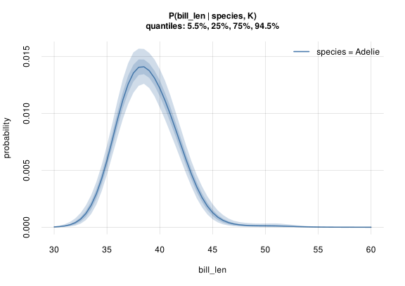

“prova” /’prɔva/ (Italian)
- (noun): test, trial, assessment, proof, evidence, sign, indication, try, attempt.
- (verb): test!, try out!, assess!, attempt!, prove!, demonstrate!, show!
Prova: probabilistic-statistical variate analysis, nonparametric and with automated Markov-chain Monte Carlo
This repository provides an R package and some theoretical background to perform probabilistic and statistical data analysis and inference. These are its main features:
- Any combination of binary, nominal, ordinal, continuous, discrete data. Continuous data can be bounded, unbounded, censored, and rounded.
- No modelling assumptions such as gaussianity, linearity, or any other kind of model. The analysis and inferences are fully nonparametric.
- No assumptions about functional dependence between data variates. The analysis and inferences are therefore more general than those by neural networks, random forests, or similar machine-learning algorithms.
- Automatic imputation of missing data: all sample data are used, even those that lacks some variate values. The imputation is done with a principled method (the marginalization rule of probability theory), rather than ad-hoc procedures.
- Easy and straightforward subgroup analyses and stratified analyses, for any division of variates, with full statistical details.
- No hard-coded distinction between “predictor” and “predictand”/target variates during learning. Any group of variates can be chosen as predictors, and any other group as targets, on the fly in each application, without need to re-learn from the training data.
- Quantification of generalizability beyond the finite sample size. In other words, quantification of uncertainty of results regarding the whole, unsampled, population.
- Straightforward use within decision theory, such as clinical decision-making. Users can immediately combine the probabilistic results with any measures of utilities, such as quality-adjusted life years.
- Quantification of associations between any kinds of variates, without modelling assumptions (gaussianity, linearity, etc.), thanks to the use of mutual information.
- Base-rate correction for inferences about out-of-population data, by means of Bayes’s theorem.
- Automated Markov-chain Monte Carlo computation. Users unfamiliar with Monte Carlo methods don’t have to worry, because the computations are handled automatically.
The package essentially performs Bayesian nonparametric inference (also called “density inference” or “inference under exchangeability”), which makes most features above possible.
Minimal example
Use the R penguins dataset (or download a shuffled version from here), together with the metadata meta_penguins available in Prova. Metadata contain the characteristics of the dataset’s variates.
“Learn” from this dataset using the function learn(). Note that the dataset has partially missing values (datapoint #4 for instance), but this is not a problem for Prova:
K <- learn(data = penguins, metadata = meta_penguins)
# [progress output about the learning computation]Ask a statistical question about the penguin population. For example: given the data we have collected, what is the probability that a new penguin from this population is of species Adélie, if its bill length is 45 mm? In symbols,
\[ \mathrm{P}(\texttt{\small species}\mathrel{\negthinspace=\negthinspace} \text{\small Adelie} \nonscript\thinspace\vert\nonscript\thinspace\mathopen{} \texttt{\small bill\\_len}\mathrel{\negthinspace=\negthinspace} \text{\small 45\thinspace mm} , K) \]
where \(K\) stands for the knowledge acquired from data and metadata. To answer this question, use the function Pr(), and print a summary of the result:
prob <- Pr(
Y = data.frame(species = 'Adelie'), # predictand
X = data.frame(bill_len = 45), # predictor
K = K # Knowledge from data & metadata
)
print(prob)
# , , |bill_len = 45
#
# probability
# species value +/- Q5.5% Q25% Q75% Q94.5%
# Adelie 0.09857 0.00053 0.05337 0.07534 0.11893 0.1527The answer is that there is roughly a 10% probability that a new penguin, among those with a 45 mm bill length, is of species Adélie.
Now ask: what is the relative frequency of Adélie species in the whole subpopulation (including unsampled penguins), of penguins having bill length of 45 mm? This cannot be answered with certainty, because we have only a sample of the full population. But Prova can calculate the probability distribution for this full-population frequency. In fact, it has already been calculated by the function Pr() above, and we can visualize it with a plot:
hist(prob)
The plot shows that this full-population frequency is most likely (with roughly 90% probability) between 0.05 and 0.15. These are the values shown by print(prob) above.
The inverse question can also be asked: if we observe a new penguin of Adélie species, what could its bill length be? The answer is uncertain, and Prova can calculate the probability distribution of the penguin’s bill length:
invprob <- Pr(
Y = data.frame(bill_len = 30:50), # predictand
X = data.frame(species = 'Adelie'), # predictor
K = K # knowledge from data & metadata
)
plot(invprob)
this probability distribution has a peak between 35 mm and 40 mm and it’s slightly skewed.
This distribution is not the frequency distribution of bill length in the whole subpopulation of Adélie penguins; the latter is uncertain because we have only a sample. But the plot above shows that the full-population frequency distribution is somewhere between the grey bands.
This was just a minimal example, just touching on the basic functionality. More complex combinations of variates and more complex probabilistic-statistical questions can be approached.
The introductory vignette explains, with a guided example, most of the features above, as well as the main ideas and functions. It can be particularly useful for researchers who are more familiar with traditional “frequentist” statistics but would like to try the Bayesian approach. See the post by Barbara W. Sarnecka, frequentist statistician turned Bayesian, for a brilliant overview of the Bayesian advantages. The vignette about mutual information explains the use of this powerful measure of association.
The package is under continuous development, but the core functionalities work and have been tested in concrete research projects; see example applications below.
The package internally does the computations necessary for Bayesian inference by means of Monte Carlo methods thanks to the R package Nimble. As already mentioned, this computation is automated. Users familiar with Monte Carlo methods can still access computational details and can even change some of the computation hyperparameters.
Installation
You need to have installed the package Nimble, at least version 1.4.2. Please follow Nimble’s installation instructions for your operating system.
Then Prova can be installed from CRAN with
install.packages('prova')In case of a newer version not yet on CRAN, it can be installed with
remotes::install_github('pglpm/prova')Documentation
The vignette An introduction to probabilistic-statistical variate analysis is a step-by-step introduction to Prova and also to Bayesian nonparametrics. It guides you through a concrete example with various kinds of inferences. You may also try to follow it using a dataset of your own.
Other tutorials are available at pglpm.github.io/prova, or can be accessed in an R session with browseVignettes('prova').
A summary of the theoretical foundations, including further references, is available in this draft. The main idea for the internal mathematical representation comes from Dunson & Bhattacharya and Ishwaran & Zarepour.
For a low-level course on Bayesian nonparametric inference and Decision Theory see Data Science and AI Prototyping.
Example applications
Projects using Prova:
- InfernoCalibNet: uncertainty-aware predictions for medical AI using CNN and Bayesian nonparametrics framework
- parkinsonbayes: Examples of Bayesian nonparametric inference for studies of Parkinson’s Disease
- Inferno-App: PySide6 application that integrates Python and R functionality using the Inferno (old version of Prova) R package.
Contact
Please report bugs and request features or specific documentation on GitHub Issues. If you have other questions about application, theory, technical implementation, feel free to contact Luca pglXYZ@portamanaXYZ.org (remove ‘XYZ’ for anti-spam purposes).